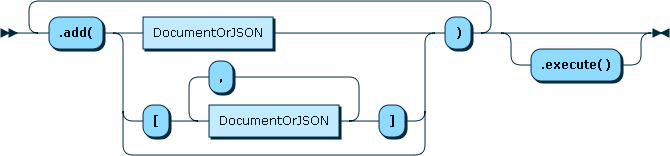
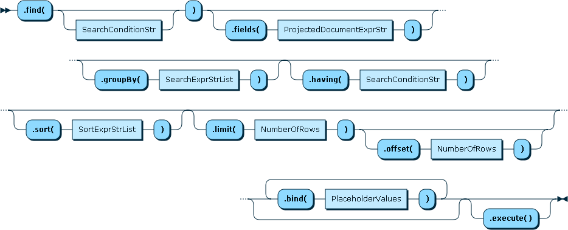
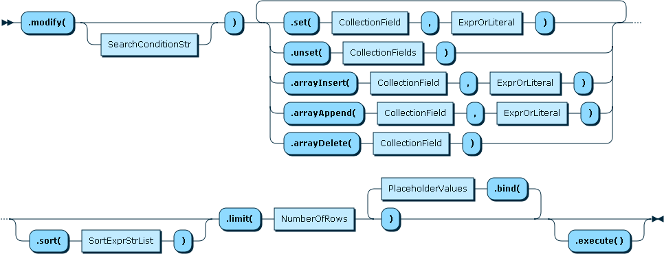
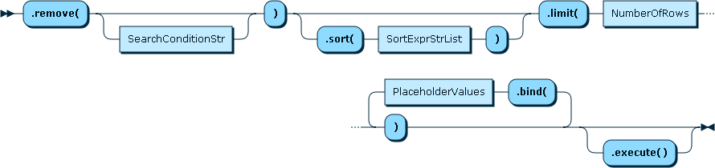

Welcome, who are we?
| Johannes Schlüter | Rui Quelhas |
Protocol insights
protobuf-based, expression trees in protocol
(straight) from the horse's mouth
Node.js® is a JavaScript runtime built on Chrome's V8 JavaScript engine. Node.js uses an event-driven, non-blocking I/O model that makes it lightweight and efficient. Node.js' package ecosystem, npm, is the largest ecosystem of open source libraries in the world.
Overview
Overview
Some features
Fluent API (Document Store)
collection.add({ name: 'foo' }).add({ name: 'bar' }).execute()
collection.find('$.name == :name').bind(name, 'foo').execute()
collection.modify('$.name == "foo"').set('$.name', 'qux').execute()
collection.remove('$.name == "bar"').execute()
CollectionAdd
CollectionFind
CollectionModify
CollectionRemove
Fallback to plain-old SQL
// insert document into a collection
session.sql(`INSERT INTO collection (doc) values ('{"_id":"foo","name":"bar"}')`)
.execute()
// project "name" property values
session.sql(`SELECT JSON_EXTRACT(doc, '$.name') FROM collection`)
.execute()
// create a virtual column and use it as an index
session.sql(`ALTER TABLE collection ADD COLUMN name TEXT(3) GENERATED ALWAYS AS
(JSON_EXTRACT(doc, '$.name')) VIRTUAL, ADD INDEX i_name (name)`)
.execute()
Asynchronous API <=> Promise
Simple push-based "cursors"
// the cursor gets executed for each element of the result set
function cursor (p) {
// p: result set element currently being processed
}
collection.find().execute(cursor)
Operation completion
collection
.find()
.execute()
.then(function (r) {
// r: instance of Result (coming up next)
})
.catch(function (e) {
// e: instance of Error
})
Result
Boilerplate (sessions and schemas)
const mysqlx = require('@mysql/xdevapi')
const session = await mysqlx.getSession('mysqlx://demo@localhost:33060')
// re-create the schema
await session.dropSchema('ple2017')
const schema = await session.createSchema('ple2017')
Working with collections and documents (CRUD)
const schema = session.getSchema('ple2017')
// re-create a collection
await schema.dropCollection('demo')
await schema.createCollection('demo')
// or re-use an existing collection
const collection = schema.createCollection('demo', { ReuseExistingObject: true })
CREATE
const collection = schema.getCollection('demo')
// pipelining parallel calls
await Promise.all([
collection.add({ name: 'foo' }).execute(),
collection.add([{ name: 'bar' }, { name: 'baz' }]).execute()
])
READ
const collection = schema.getCollection('demo')
const docs = []
await collection
.find()
.execute(doc => doc && docs.push(doc))
console.log(docs) // [{ name: 'foo' }, { name: 'bar' }, { name: 'baz' }]
UPDATE
const collection = schema.getCollection('demo')
const docs = []
await collection
.modify('$.name == "foo"')
.set('name', 'qux')
.set('oldName', 'foo')
.execute()
await collection
.find()
.execute(doc => doc && docs.push(doc))
console.log(docs) // [{ name: 'qux', oldName: 'foo' }, { name: 'bar' }, ... ]
DELETE
const collection = schema.getCollection('demo')
const docs = []
await collection
.remove('$.name == "qux"')
.execute()
await collection
.find()
.execute(doc => doc && docs.push(doc))
console.log(docs) // [{ name: 'bar' }, { name: 'baz' }]
Transaction Support
try {
await session.startTransaction()
const result = await schema.getCollection('child')
.add({ name: 'foo', parent: 'bar' })
await schema.getCollection('parent').modify('$._id == "bar"')
.arrayAppend('tracking', result.getDocumentId())
await session.commit()
} catch (err) {
await session.rollback()
}
Thank You & Pointer to InnoDB Cluster & DocStore Session by Jan
The preceding is intended to outline our general product direction. It is intended for information purposes only, and may not be incorporated into any contract. It is not a commitment to deliver any material, code, or functionality, and should not be relied upon in making purchasing decisions. The development, release, and timing of any features or functionality described for Oracle’s products remains at the sole discretion of Oracle.